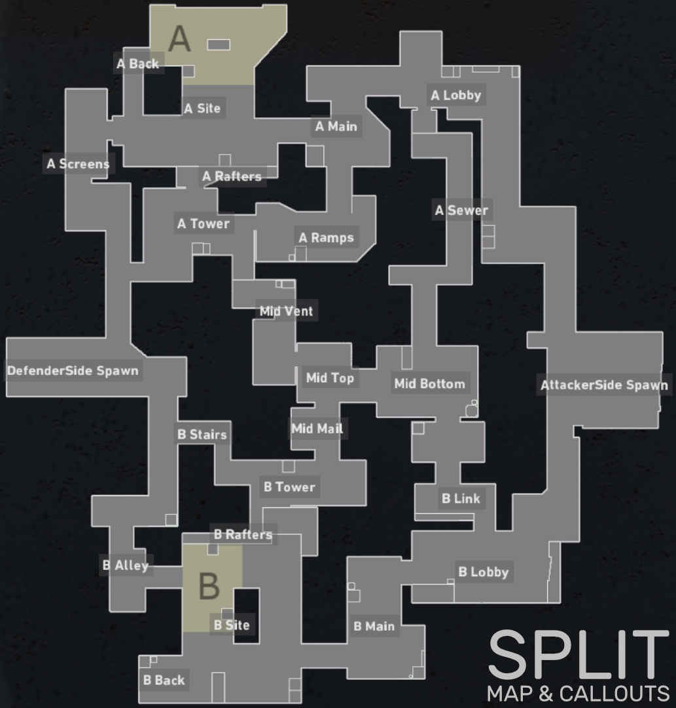
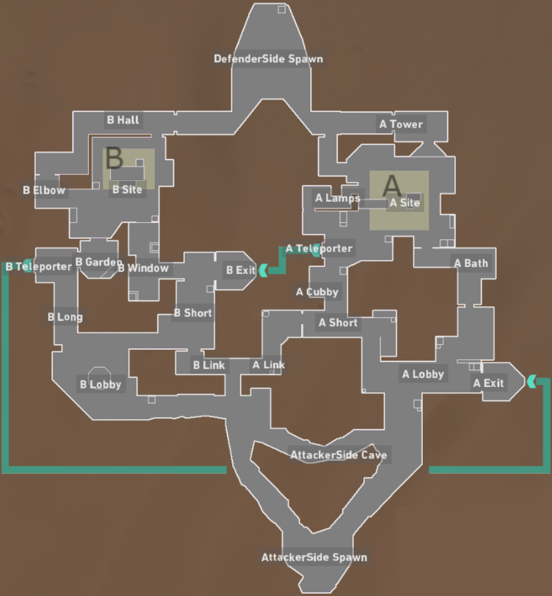
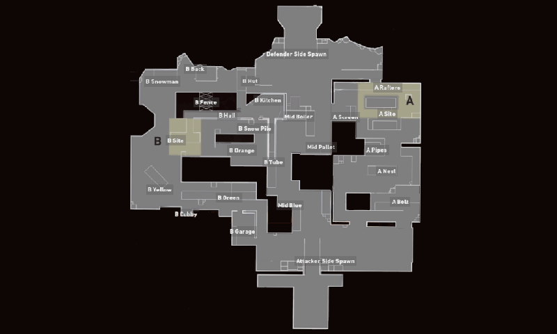
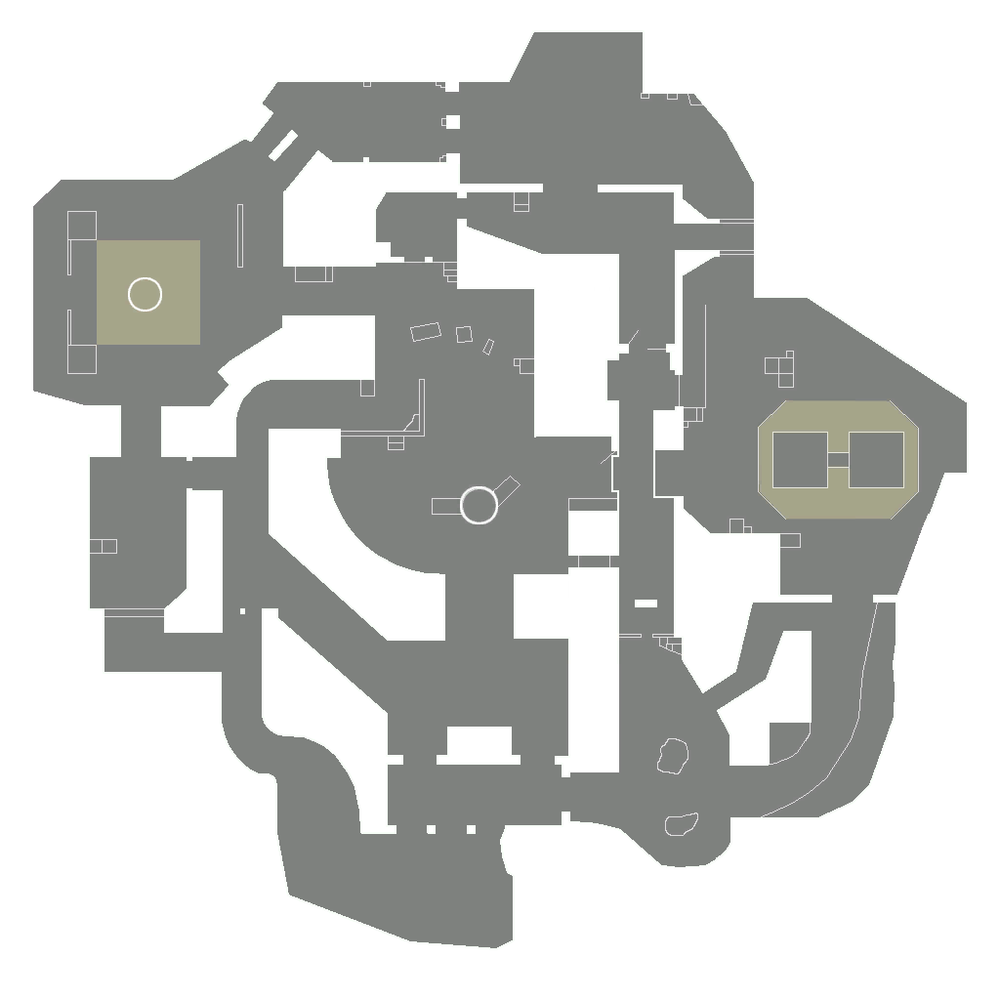

Maps
Haven

Split
Bind
Ascent

Icebox
Breeze
In Valorant there are a total of six maps that all have unique features. Some have doors players can open and close, some have ziplines, some have vents players can jump through, etc. Majority of the maps have 2 sights where the attacking team plants the bomb, a middle where there is open territory and two spawns. Each spawn corresponds to the attackers and defenders. One map called Haven has 3 sights instead of 2 and has no middle, and another map called Bind has 2 sights but no middle. The lack of middle is made up by the 2 telporters players can jump through to move through the map quicker.